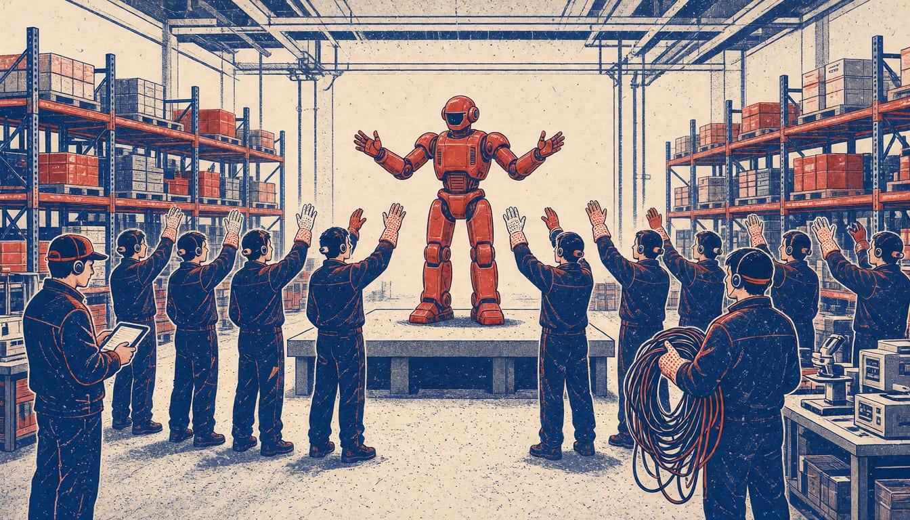

Genesis AI raises $500 million to produce its Eno robot, with Bpifrance among the backers
The round values the robotics firm at $3.5 billion, and the company plans to build a US supply chain and win American customers before expanding in Europe.

Genesis AI has raised $500 million, about €455 million, in a Series A funding round that values the company at $3.5 billion, roughly €3.2 billion. The round was co-led by Premji Invest, Khosla Ventures and Eclipse. The euro figures follow the European Central Bank's reference rate of 17 November.
Bpifrance is among the backers. The company announced it on 17 November from Paris and San Carlos, California. Zhou Xian, co-founder and chief executive of Genesis AI, said the company is focusing first on the United States. The company plans to build a US supply chain, work with US contractors and win customers there before expanding more broadly in Europe. Other investors include NVIDIA, AMD Ventures, Samsung Next, Ericsson, Zoom, Durable Capital Partners and accounts advised by T. Rowe Price Associates.
Zhou said the money will increase production of Eno, expand data collection and AI training, and improve the robot's ability to manipulate objects with its hands. Eno is Genesis AI's flagship general-purpose robot. Eno is initially focused on industrial environments, where the workplaces include manufacturing, logistics and laboratories. The company frames Eno as one machine meant to work across many settings rather than a single task.
The training itself relies on people. More than 100 workers around the world wear the company's sensor gloves and headset cameras, and their movements feed the training dataset. Zhou said the company's mission is to remove the physical limits on human ambition, and that the funding will speed up deploying the robots at scale, with a larger rollout to customers planned for 2027. The company plans to bring Eno into hospitality and healthcare, followed by consumer and outdoor applications.
Sifted, which covers European start-ups, calls the round one of the largest robotics rounds in Europe in 2026.